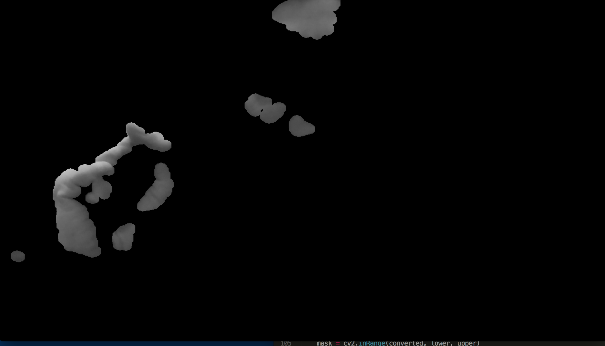
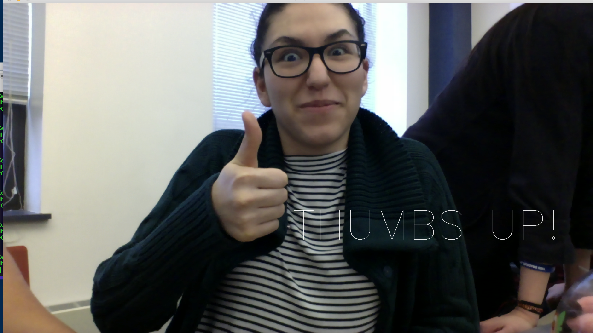
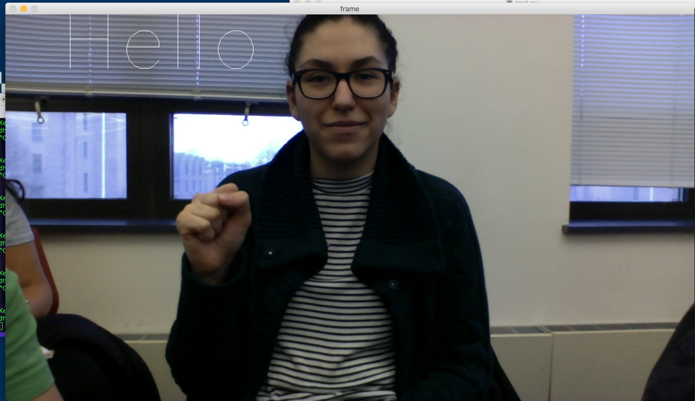
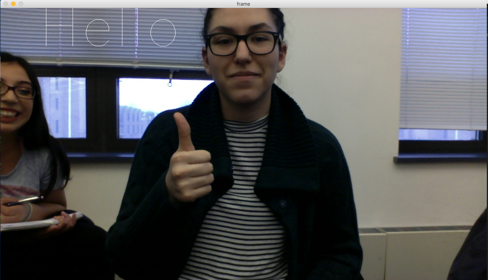
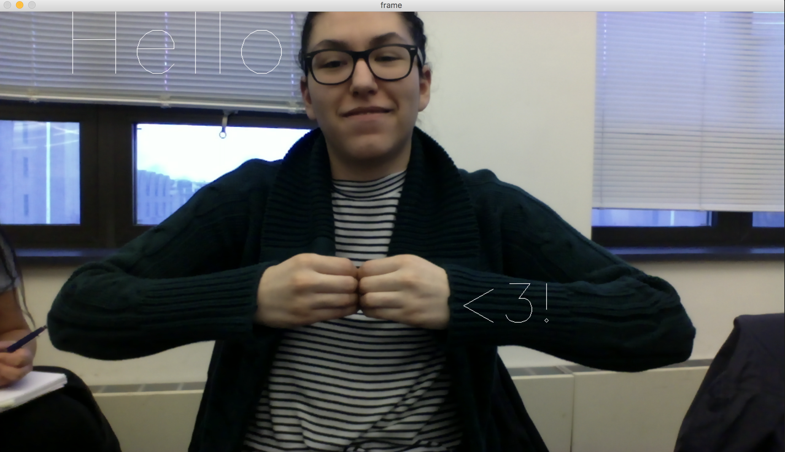
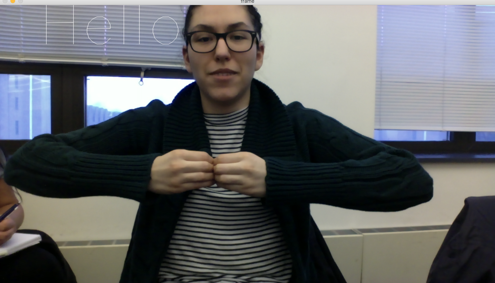
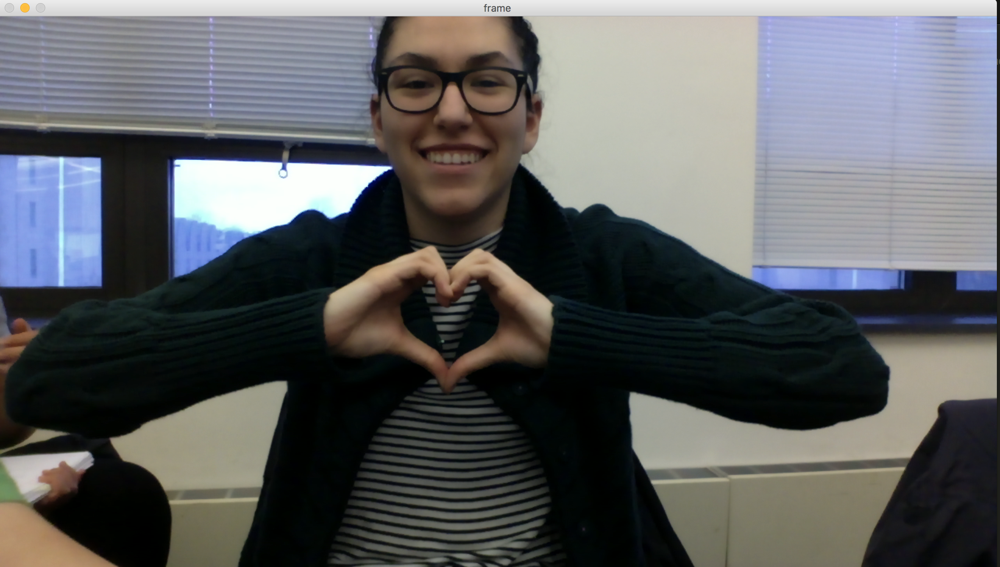
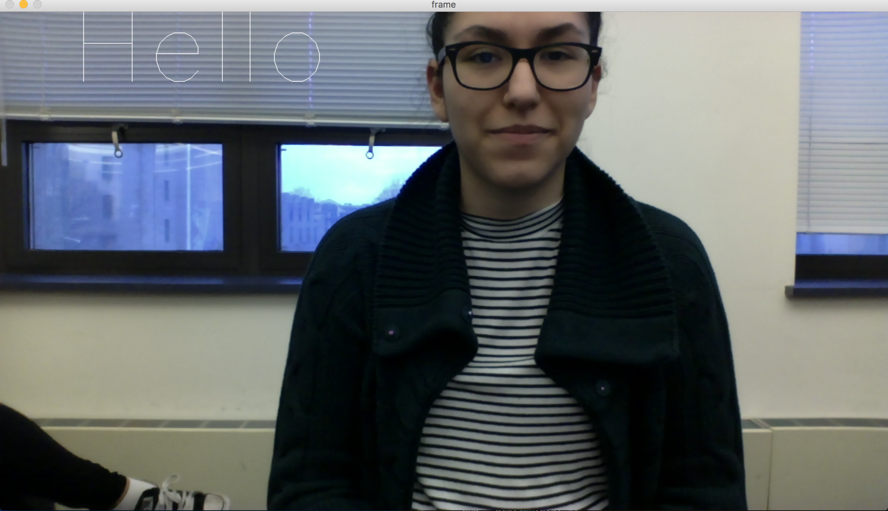

Problem Definition
In this assignment we implemented a program that can detect three hand gestures. The first two are static, and can detect a thumbs up and someone making a heart with their hands. The last gesture that it can detect is a hand wave. For the static gestures, we used skin color detection and size of bounding boxes to classify each gesture. For the dynamic gesture, we also used skin detection and then object tracking to determine whether or not the user waved.
Method and Implementation
We first decided to use the OpenCV library with Python, since we were most comfortable with that language. Using the built in functions, we were able to implement a skin detect function (similar to the one given to us in the skeleton code), and then used to to create bounding boxes around skin-colored objects. With the bounding boxes, we then checked the aspect ratio since it would be different for a thumbs up vs. the heart gesture.
Here is an example of the skin differencing function in action, where black pixels represent anything that's not skin colored:

For the dynamic motion, we used skin differencing again to detect a hand, then created a circle over it that would follow the center of the palm. This would allow the program to recognize a moving object. Using this we were able to track the movements of said object and determine whether or not it would fit with the actual movements of a waving hand.
For each gesture that's classified correctly by the program, the text describing that gesture will appear on the screen to let the user know. You can see this in the screenshots we provide.
Experiments and Results
We did 50 trials and were able to create a confusion matrix to determine accuracy of our program.
To test each gesture, we tried multiple variations of the gesture to see if our program would accurately classify it, as well as gestures that were similar in shape to test the false positive rate. For example, since the program is implemented with checking the aspect ratio of a bounding box, there were some cases where the algorithm incorrectly classified a closed fist as a thumbs up, since the aspect ratio of a bounding box around a fist was similar to a thumbs up. We provided screenshots below to show this.
Thumbs Up
Confusion Matrix based on 50 trials:
| TP: 21 | FP: 10 | FN: 7 | TN: 12 |
Meaning that the accuracy for detecting a thumbs up gesture was about 66%, we will discuss below the factors that contributed to this accuracy rate.
An example of a true positive:

An example of a false positive:

An example of a true negative:

An example of a false negative:

Heart
Confusion Matrix based on 50 trials:
| TP: 22 | FP: 11 | FN: 9 | TN: 8 |
Meaning that the accuracy for detecting a heart gesture was around 60%. An example of a true positive:

An example of a false positive:

An example of a true negative:

An example of a false negative:

The way these were implemented was by using bounding boxes around the contours that were determined from the skin detection. We then checked the aspect ratio of these bounding boxes and used that to create functions that would verify whether the bounding box matched with a thumbs up gesture as opposed to a heart gesture. Here is a screenshot showing the bounding boxes in action:

Hand Wave
Confusion Matrix based on 50 trials:
| TP: 14 | FP: 14 | FN: 8 | TN: 14 |
Meaning that the accuracy for detecting a hand wave gesture was around 56%. An example of a true positive:

An example of a false positive:

An example of a true negative (Jackie was moving her hand up and down):

An example of a false negative (Jackie was actually waving):

The way these were implemented was by tracking an object using the skin detection function that was given to us. We found the centroid of the object and created a deque that contained all the points of the centroid over time. Using this deque, we were able to plot a trail of the object, and use the shape of that to detect a hand wave. To do this, we checked that the y-coordinates of the centroid remained relatively similar, while the x-coordinates would change over time to mimick a hand wave gesture. An example is shown below, where you can see the centroid of the hand and the trail that shows it's movement:

Discussion
It was clear from our experiments that our program was not 100% accurate, which is what we expected. One factor that caused this was that the skin differencing function would often classify our backgrounds as skin, which would cause a lot of problems in the rest of the program. For example, there were times where bounding boxes would be drawn on a window behind us or the wall. Another issue is that the aspect ratios used to classify each gesture are hard coded, meaning that if someone with larger/smaller hands were to try the program, it would be a little harder to classify their gestures.
We found that the hand wave gesture recognition was the least accurate, and this was again due to the skin differencing function being sensitive to our background. There were cases where the object tracker would jump around the screen, causing issues with it being able to track a hand wave gesture. If we had more time to work on this program, we would have to make it less sensitive to backgrounds, and we believe that this could make the program more accurate.
Conclusions
Regardless of the accuracy issues, we're pretty satisfied with how the program came out. It was able to detect the two static motions (under careful circumstances), as well as being able to detect a hand waving. The only thing is that we wish we had more time to finish this assignment, since a massive obstacle was getting started with the OpenCV library.
Credits and Bibliography
Sources used:
- http://www.pyimagesearch.com/2015/09/14/ball-tracking-with-opencv/
- http://www.pyimagesearch.com/2014/08/18/skin-detection-step-step-example-using-python-opencv/